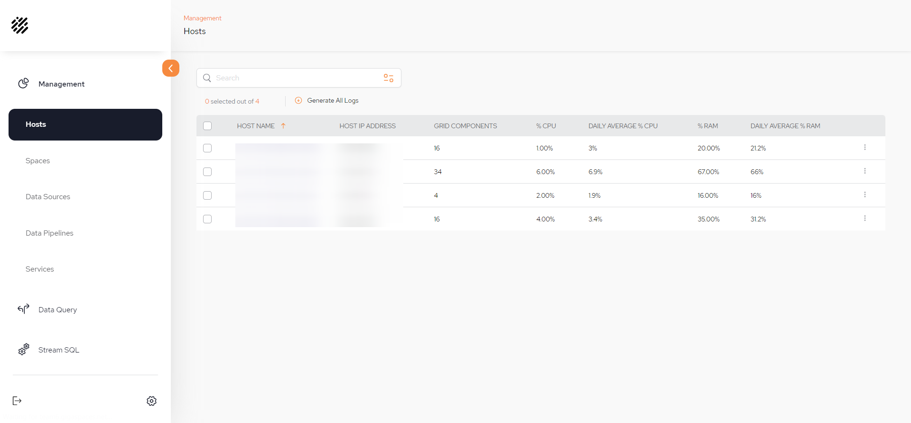
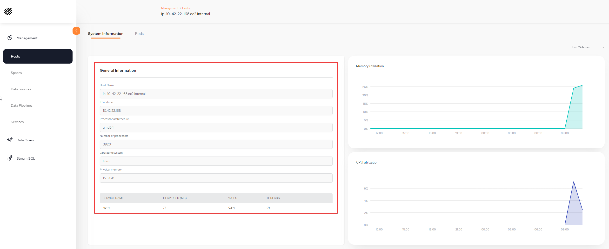
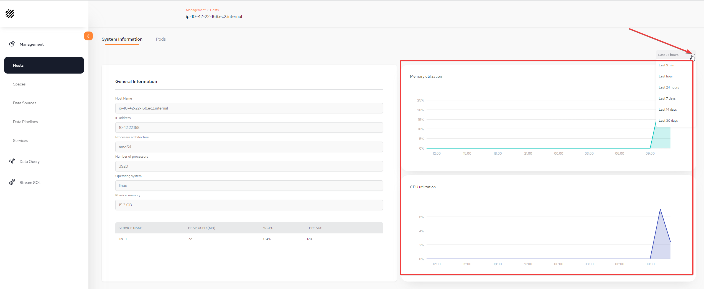
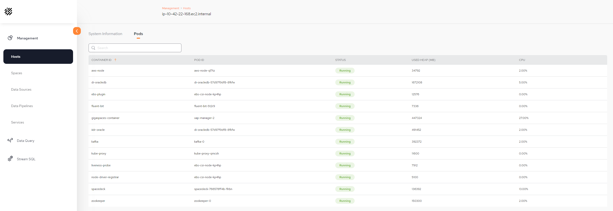

This menu displays specific hosts information and can be used to generates logs. The menu can be used to monitor the health of the hosts to ensure that if limits are being reached, there is an opportunity to rearrange data or increase the amount of RAM or nodes.

HOST NAME – The Kubernetes host name in the machine.
HOST IP ADDRESS – The Kubernetes node IP address.
GRID COMPONENTS – The number of pods related to this node.
%CPU – Refers to the percentage of a machine's CPU (Central Processing Unit) that is being used at a given time.
DAILY AVERAGE % CPU – Refers to the average percentage of a machine's CPU over a 24 hour period. Used to understand how much CPU is typical for a system over time.
%RAM – Refers to the percentage of a machine's RAM (Random Access Memory) that is being used at a given time.
DAILY AVERAGE % CPU – Refers to the average percentage of a machine's RAM over a 24 hour period. Used to understand how much RAM is typical for a system over time.
There is the ability to generate log dump files, that are saved locally, that include information about the runtime environment.
Log dumps can be generated in three different ways:
Log dump of a single host: Selecting a single host:
Log dump of selected hosts: Select more than one and clicking the Generate Selected Log situated above the table
Log dump of all hosts: Clicking the Generate All Logs option situated above the table
Click on a host name to view details of that host. Two tabs are available: System Information and Pods.
.
The System Information tab displays information relating to the architecture of the machine. In addition the services running on this host are displayed, including heap used, percentage of CPU and number of threads:

On the right side of the screen there are two metrics displayed: the memory and CPU utilization of this host. It is possible to change the view of the time measure:

The Pods tab displays the Pods of the host.

CONTAINER ID – Identifier of the container.
SERVICE ID – The service on this container.
TYPE – Primary or Backup.
STATUS – This will display Active or Error.
ZONES - This is displayed if the user defines a zone name of this container.
USED HEAP (MB) – Refers to the heap used, in MB.
CPU – Refers to the percentage of a machine's CPU that the container is using.
THREADS – The number threads running on this container.
By selecting the kebab menu (vertical three-dot menu) on the far right, two options will be displayed:
Can generate selected or all logs from the options at the top of the table:

View Logs: Opens a searchable log from a selected container: